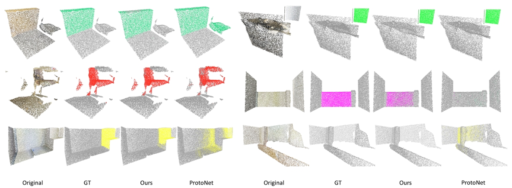
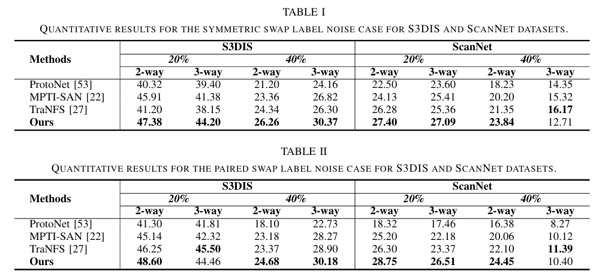

Results

Visual comparisons of our method, ProtoNet, and the ground-truth labels on six blocks of scenes from S3DIS dataset.

Quantitative Results.

3D scene semantic segmentation plays a crucial role in robotics by enabling robots to understand and interpret their environment in a detailed and context-aware manner, facilitating tasks such as navigation, object manipulation, and interaction within complex spaces. A preponderance of method ology predominantly adopts a fully supervised framework for 3D point cloud scene semantic segmentation. Such paradigms exhibit an intrinsic dependency on extensive labeled datasets, presenting challenges in acquisition and exhibiting incapacity to segment novel classes, especially when the training data are contaminated by noisy samples. To address these limitations, this study introduces a novel few-shot segmentation approach to robustly segment 3D point cloud scenes with noisy labels using a meta-learning scheme. Specifically, we first build a multi prototype graph and then suppress samples with noisy labels based on the graph structure. A subgraph bagging scheme is then proposed to conduct semi-supervised transductive learning to propagate labels. To optimize the graph structure to learn discriminative prototype features, we design a triplet contrastive loss to increase the compactness of these subgraphs. We evaluated our method on two widely used 3D point cloud scene segmentation benchmarks within few-shot (i.e., 2/3-way 5-shot) segmentation settings with noisy samples. Experimental results demonstrate the improvement of our method over the compared baselines, illustrating the robustness of our method in few-shot 3D scene segmentation against noisy samples.
@inproceedings{huang2024noisy,
title={Noisy few-shot 3d point cloud scene segmentation},
author={Huang, Hao and Yuan, Shuaihang and Wen, CongCong and Hao, Yu and Fang, Yi},
booktitle={2024 IEEE International Conference on Robotics and Automation (ICRA)},
pages={11070--11077},
year={2024},
organization={IEEE}
}